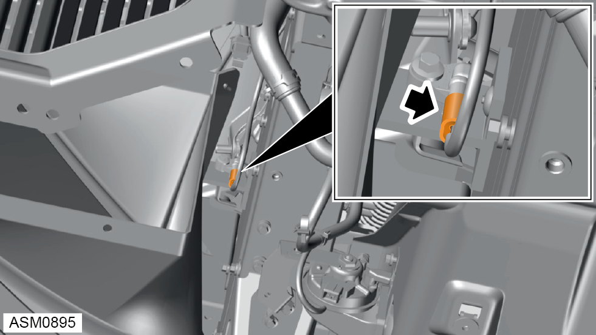
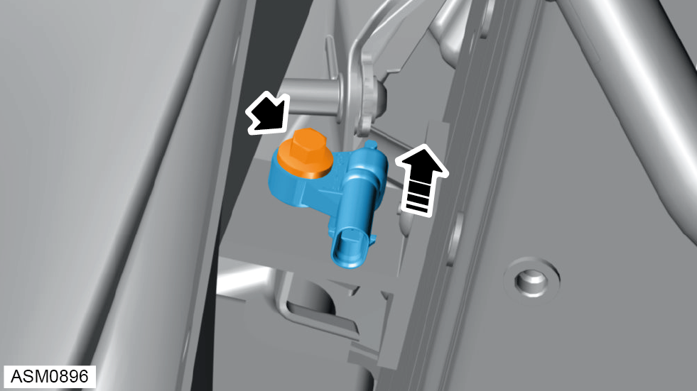

Forward Crash Sensor - Left Side
Print
Operation Code: 17.35.15-02
Removal
- Remove front undertray. Refer to procedure.

- Disconnect harness connector from forward crash sensor.

- Remove M6x25 bolt securing forward crash sensor to bracket. Torque 10 Nm.
- Remove forward cash sensor.
Installation
- Installation is the reverse of removal procedure except for the following:
- Perform a diagnostic read and clear error memory using Lotus Insight tool.
- Turn on ignition and make sure SRS warning lamp extinguishes.